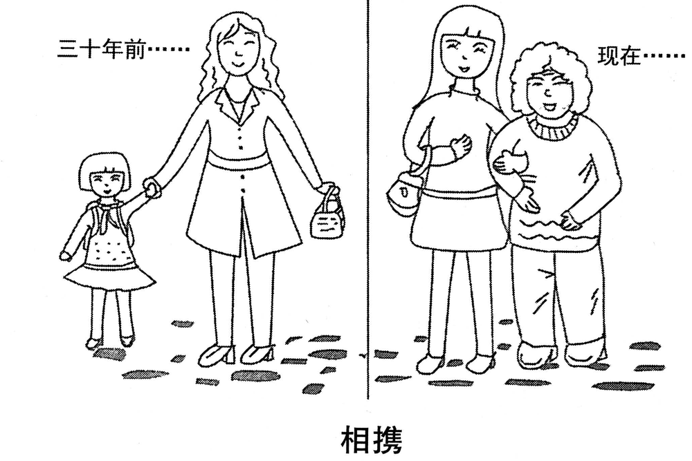

A小作文 · 给校长写信，建议如何改善学生体质（10 分）
Write a letter of about 100 words to the president of your university, suggesting how to improve students’ physical condition.
You should include the details you think necessary.
You should write neatly on the ANSWER SHEET.
Do not sign your own name at the end of the letter. Use “Li Ming” instead.
Do not write the address. (10 points)
💭 审题三件事
- ⭐⭐ 这封信是写给一个握着权限的人。2007 写给图书馆（一个机构），建议图书馆改服务，天然就是它能办的事；2014 写给校长，建议的对象却是「学生的体质」——最容易写成对学生的劝告：早睡早起、按时吃早饭、少玩手机。校长管不了学生几点睡，他能动的是课表、场馆、学分、赛事、食堂。⟹ 每条建议先问一句：这是校长签个字就能办的吗？（这正是 2009 致编辑信「建议里要有编辑自己能办的」那条规矩的第二次应用。）
- ⭐ suggesting how ⟹ 每条建议要带「动作＋时间／地点／方式」。❌「学校应该重视学生体育锻炼」是口号；✅「每天下午 4:30–5:30 不排课」「体育馆开到晚上 10 点」「规律锻炼计入体育学分，用打卡小程序记录」是办法。三条就够，每条一句。
- 学生写给校长，语气往上抬，别下指令。建议用 could / might / it would help if；不写 The university should … / You must …（对校长用 should 等于替他做决定）。先一句现象让建议有来由——用身边的、可信的观察（本班体测、每天坐多久），不编全国统计数字；也别写成投诉信（2007 的雷区）。
⭐⭐ 八年 Part A 八种读者（体裁第二次重样：2014 撞 2007）
| 年份 | 体裁 | 读者是谁 | 第一句怎么起 | 落款 | 本年特有的坑 |
|---|---|---|---|---|---|
| 2007 | 建议信 | 校图书馆（机构） | I am writing to put forward several suggestions … | Li Ming | 建议只有口号没有可执行动作；写成投诉信 |
| 2008 | 道歉信 | 具名熟人 Bob | I am writing to apologize for … | Li Ming | 只道歉不给方案；方案没有「动作＋方式＋时间」 |
| 2009 | 致编辑信 | 报社编辑 | I am writing to express my concern about … | Li Ming | 建议里没有一条是编辑自己能办的 |
| 2010 | 通知 NOTICE | 一群人（无称呼） | Volunteers are needed for … | 机构名 | 写 Dear ＝ 体裁错；落款签 Li Ming |
| 2011 | 推荐信 | 未具名的朋友 （名字自己起） | How have you been? I am writing to recommend … | Li Ming | 写成影评／剧透结局；通篇只有「我」没有「你」 |
| 2012 | 欢迎邮件 （以组织名义） | 一群人（国际学生） 但仍是书信 | On behalf of the Students’ Union, I would like to extend a warm welcome to … | Li Ming ＋ Students’ Union | 按 2010 的手感写成通知；通篇 I 没有 we；Welcome you to … |
| 2013 | 邀请邮件 （请人担任角色） | 本校外教（给身份、不给名字） | As chair of the English Club, I am writing to invite you to serve as a judge for … | Li Ming | 只邀请、不交代工作量；Dear foreign teacher；没给答复期限 |
| 2014 本题 | 建议信 （第二次，撞 2007） | 本校校长（给职务、不给名字）——握着权限的个人 | As a third-year student, I am writing to suggest how our university might improve … | Li Ming | ⭐ 建议写成对学生的劝告（早睡早起、少玩手机）；用 should 给校长下指令；Dear Headmaster；physical quality |
- ⭐ 2012 页定的四问：① 体裁词（letter ⟹ 有 Dear）② 读者是谁——⭐ 本年要多问半句：他手里有什么权限？建议只能落在这些权限上；③ 以谁的名义（没给 ⟹ 学生本人即可，一句身份交代）；④ Do not sign ⟹ Li Ming。
- ⭐⭐ 「七年七种不重样」到珍藏版第一年断了：基础版 2007–2013 七年七种体裁，2014 回到了 2007 的建议信。这不说明「该押建议信」，恰恰说明押体裁没用——同是建议信，2007 写给机构、2014 写给有权限的人，要写的建议几乎没有交集。
- ⚠️ 「建议」这个动作其实年年在：2007 making suggestions · 2008 suggest a solution · 2009 make two or three suggestions · 2012 provide some suggestions · 2014 suggesting how——九年里五年要写建议。⟹ 「建议要能照做」这条纪律，比任何一种体裁的格式都常用。
⭐⭐ 同是建议信：2007 致图书馆 vs 2014 致校长（本页新增）
体裁名词决定格式，读者手里的权限决定内容。把两年的建议对调着写，两年都会掉档。
| 对照项 | 2007 · 致校图书馆 | 2014 · 致校长 |
|---|---|---|
| 读者 | 一个机构 | 一个人，有头衔，握着全校的权限 |
| 称呼 | Dear Sir or Madam, | Dear President Wang,（自起姓 ＋ 头衔） |
| 建议的对象 | 读者自己的服务（开馆时间、借阅、座位） | 第三方的状态（学生的体质）⟹ 最容易越过读者、直接劝学生 |
| ⭐ 建议必须是 | 图书馆能改的 | 校长签个字就能办的：课表、场馆、学分、赛事、食堂 |
| Directions 怎么交代要点 | making suggestions for improving its service | suggesting how ＋ include the details you think necessary（连续第二年） |
| 语气 | 读者对等 ⟹ 客气即可 | 读者在上 ⟹ could / might，不用 should |
⚠️ Directions 限定词清算表（开考先圈出来）
| 限定词 | 它约束什么 | 违反的后果 |
|---|---|---|
| a letter … the end of the letter | 书信格式：称呼 ＋ 正文 ＋ 结尾敬语 ＋ 落款 | 写成倡议书（无称呼、落款写机构） |
| to the president of your university | 读者＝大学校长一个人，没给名字 ⟹ Dear President ＋ 自起姓 | ❌ Dear Headmaster / Principal（中小学校长）· ❌ Dear Mr. President · ❌ Dear Sir or Madam（写给机构才用） |
| your university | 读者在校内、了解学校 ⟹ 不必介绍学校，直接说哪个场馆、哪个时段 | 大段「我校是一所历史悠久的大学」 |
| suggesting how to improve | ⭐ 要办法：每条带动作 ＋ 时间／地点／方式 | 只写 we should attach importance to physical exercise（口号） |
| students’ physical condition | 全体学生的体质 ⟹ 建议要覆盖一校人，不是我个人的健康计划 | 写成「我打算每天跑步」的个人决心书 |
| physical condition | ＝ 体质、身体状况 | ❌ physical quality · ❌ body quality（中式） |
| include the details you think necessary | ⭐⭐ 校长拍板要用上的：哪个时段、开到几点、怎么记录 | 细节漏光（只剩三句口号）；或写锻炼的好处一大段（不必要） |
| of about 100 words | 95–115 最稳 | 三条建议各带一段论证 ⟹ 写到 150 |
| Do not sign … Use “Li Ming” instead Do not write the address | 落款 Li Ming；不写地址 | 签真名有判零风险 |
🧩 建议落在谁的权限里：校长管得了 vs 管不了（本页新增）
2009 页的规矩是「建议里要有编辑自己能办的」。本年同一条规矩换了个读者：凡是校长签字就能改的，写；凡是只能靠学生自觉的，要么不写，要么改写成「校长能创造的条件」。
| 想说的事 | ❌ 写成劝学生 | ✅ 改写成校长能办的 |
|---|---|---|
| 没时间锻炼 | Students should find time to exercise. | The hour from 4:30 to 5:30 every afternoon could be kept free of classes. |
| 没地方锻炼 | Students should go to the gym more often. | The gym and the sports ground could stay open until 10 p.m. |
| 坚持不下去 | Students should keep exercising every day. | Regular exercise could count towards PE credits, recorded by a check-in app. |
| 熬夜 | Students should go to bed early. | （校长管不了几点睡——这条干脆不写，或改为 dormitory lights-out 这类学校确有的制度，但有争议，不如不写） |
| 吃得不好 | Students should eat a healthy breakfast. | The canteens could offer a cheap, balanced breakfast set. |
- ⭐ 建议写给谁，就要是谁能办的事。「学生应该……」写给校长，等于请校长去转告学生——他读完信什么也做不了。
- ⭐ 三条建议分三个杠杆：时间（课表）· 空间（场馆）· 激励（学分）——不重复，也覆盖了「没时间、没地方、坚持不下去」三个真原因。
✍️ 范文（ 词 · 🟡 亮点点击看讲解）
Dear President Wang,
身份 ＋ 目的 ＋ 现象As a third-year student, I am writing to suggest how our university might improve students’ physical condition. In this term’s fitness test, nearly a third of my classmates failed the endurance run, and most of us spend over ten hours a day sitting.
三条建议First, the hour from 4:30 to 5:30 could be kept free of classes, so that exercise has a fixed place in our timetable. Second, the gym and sports ground could stay open until 10 p.m., when most of us are free. Third, regular exercise could count towards PE credits, recorded by a check-in app.
收束 ＋ 请求Such changes would turn exercise from a slogan into a habit. I would be grateful for your consideration.
Yours sincerely,
Li Ming
我是一名大三学生，写信想就学校如何改善学生体质提几点建议。本学期体测中，我们班将近三分之一的同学耐力跑不及格，而且我们大多数人每天要坐十个小时以上。
第一，每天下午 4:30 到 5:30 这一小时可以不排课，让锻炼在课表里有一个固定的位置。第二，体育馆和运动场可以开放到晚上 10 点——那正是我们大多数人有空的时候。第三，规律锻炼可以计入体育学分，用打卡小程序来记录。
这些改变能让锻炼从一句口号变成一种习惯。如您能考虑这些建议，我将不胜感激。
此致
李明
- ⭐⭐ 要点建议写成对学生的劝告：Students should go to bed early / eat breakfast / put down their phones。写给校长的建议，必须是校长能办的事——否则他读完信什么也做不了。
- ⭐ 要点只有口号没有办法：The university should pay more attention to physical exercise。题干是 suggesting how——how 要的是时段、场馆、记录方式。
- ⭐ 称呼❌ Dear Headmaster,（中小学校长）· ❌ Dear Principal, · ❌ Dear Mr. President,（称呼国家元首）· ❌ Dear president,（小写）⟹ ✅ Dear President Wang,
- 语域❌ You should … / The university must …（对校长下指令）⟹ ✅ … could be kept / could stay open / It would help if …
- 语言❌ physical quality / body quality ⟹ ✅ physical condition / physical fitness；❌ improve students’ body。
- 内容现象句编全国统计（According to a survey, 80% of college students …）。数字要身边的、可信的——本班体测、每天坐几个小时，读起来是观察，不是编造。
- 内容写锻炼的好处一大段：校长不需要被说服「锻炼有益健康」，他需要知道怎么做。necessary 把这段筛掉了。
- 字数about 100 词：95–115 最稳。本文 词（不含称呼与落款）。
- ⭐ 第一句照抄题干的 suggest how … physical condition：阅卷人扫描的是要点词，第一句就让它落地；might 把「建议」压成商量的口气。
- ⭐ 现象句只写一句，而且是身边的：nearly a third of my classmates failed the endurance run——my classmates 把数字限定在自己看得见的范围里，可信；spend over ten hours a day sitting 顺手交代了原因（久坐），为下一段「留出一小时」铺路。
- ⭐⭐ 三条建议 ＝ 三个杠杆 ＝ 三个真原因：没时间 → 课表留一小时；没地方 → 场馆开到 10 点；坚持不下去 → 计入学分。First / Second / Third 让阅卷人一眼数出三条。
- ⭐ 每条都带一个细节（4:30–5:30、10 p.m.、check-in app）——这就是 details you think necessary：校长签字前要知道的数。
- 主语是「时间／场馆／锻炼」，谓语用被动或 could：the hour … could be kept free · the gym … could stay open——不写 You should keep …，建议落在制度上，不落在校长身上。
- 第二条补一个 when 从句：until 10 p.m., when most of us are free——说明为什么是 10 点，一个从句就是一条理由。
- ⭐ 收束句 from a slogan into a habit：把三条建议收成一个目标；turn A into B 比 make exercise more popular 具体。
- 落款两行：Yours sincerely, / Li Ming。题干没有 in the name of，不补机构名。
B大作文 · 图画作文（20 分）
Write an essay of 160–200 words based on the following drawing. In your essay, you should
1) describe the drawing briefly,
2) interpret its intended meaning, and
3) give your comments.
You should write neatly on the ANSWER SHEET. (20 points)

- 一条竖线把画面分成两格——本中心已做的九年里第一幅两格图（2007 的两个气泡是两种想象，不是两个时间）。
- 左格「三十年前……」：年轻的母亲，长卷发、外套、高跟鞋，另一只手提着手提包，俯身向下伸手，牵着小女儿；小女孩短发，背着书包，颈上系着三角巾（黑白图，看着像红领巾），仰着头、举着手去够妈妈的手——像是送她上学的路上。
- 右格「现在……」：长大的女儿，长直发，肩上挎着手提包，已经比母亲略高；她的胳膊穿过母亲的胳膊，手扶在母亲臂弯上——挽着母亲走。母亲短卷发、额上有了纹路，粗毛衣、宽松裤、平底鞋，两只手都垂着，没去抓女儿。
- ⚠️ 两格四个人全在笑；脚下是一样的石板路，竖线把时间切开了，路没切开。
- ⚠️ 母亲没拄拐、没坐轮椅、没被搀着上台阶——她在自己走路，只是胳膊上多了女儿的一只手。
- 两格的标签都以省略号收尾；图下方图注：「相携」——两个字，没有引号。
💭 审题：两格各自是单向的，「相」字在两格之间
- 两格图先找「变」：三十年前妈妈牵女儿，现在女儿挽妈妈——谁扶谁，方向反过来了。主题送到手上：亲情、代际、陪伴。这一步谁都看得出，只够三档。
- ⭐⭐⭐ 再拿图注核对每一格：左格是妈妈携女儿，右格是女儿携妈妈——每一格都只有一个方向，哪一格都不「相」。⟹ 「相」字不在任何一格里，在两格之间：隔了三十年，两次单向的携，才凑成一个「相」。这就是题眼，也是第二段的第一句。
- ⭐ 再核对现成模板的前提：「反哺」——乌鸦反哺，说的是老鸟已经不能自己觅食。回画面查：母亲在自己走路、在笑、没拄拐，女儿是挽，不是扶、更不是背 ⟹ 要写的是「陪伴」，不是「赡养／照护」；「报恩」则把相携写成了还债。⟹ 第二段三步：① 单看每一格都不相 → ② 相在两格之间、是时间换了位置 → ③ 不附条件，所以不是交易。
- 「三十年前……」「现在……」✅ captioned “Thirty years ago…” / “Now…”——省略号照抄（它后面有用）。❌ before thirty years（中式）· ❌ thirty years before（＝在另一个过去时刻之前三十年，参照点不是现在）。
- 「相携」✅ “Supporting Each Other”（「相」＝each other，「携」＝support，两个都保住）· 可用 “Walking Together”（丢了「携」）· “Hand in Hand”（只贴左格——右格是 arm in arm；也丢了「相」）。❌ “Help Each Other”（像互助小组，把陪伴写成了干活）。
📐 描图段三看（本图版 · 两格图要逐项对照着看）
| 看什么 | 本图看出来的 | 写进文章的哪一句 |
|---|---|---|
| ① 看图上的字 | 两格标签（带省略号）＋ 图注「相携」 | In the first scene, captioned “Thirty years ago…” … In the second, captioned “Now…” … The title reads “Supporting Each Other”. |
| ② 看最反常处 | ⭐⭐ 反常的是图注：题目叫「相」，每一格却只有一个方向 | Yet neither scene, taken alone, shows anything mutual: in each, one person holds and the other is held. |
| ③ 看动作方向 | 左格：大手向下牵小手；右格：并肩挽臂，女儿的手扶着母亲 | the woman who once reached down for a small hand now walks with her daughter’s arm through hers |
⭐⭐ 两格图第一问：什么变了，什么没变（本页新增）
两人图先判关系（2012）、群像图先看人与人有没有差别（2013）——两格图先列「变 / 不变」。变的那几项证明时间走了，不变的那一项才是文章的立足点。
| 细节 | 三十年前 | 现在 | 写不写、写在哪 |
|---|---|---|---|
| ⭐⭐ 谁扶谁 | 妈妈牵女儿 | 女儿挽妈妈 | 必写：第一段两句同构写出来，第二段拿它破「相」 |
| ⭐ 姿势 | 大手向下牵小手 | 并肩挽臂 | 第二段 reached down → arm through hers |
| 身高 | 女儿够不着妈妈的腰 | 女儿略高于妈妈 | 第一段 slightly taller，两个词 |
| 鞋 · 发型 | 高跟鞋 · 长卷发 | 平底鞋 · 短卷发 | 第一段挑一项写老了（本文写鞋和烫发） |
| 包 | 妈妈提着 | 女儿挎着 | 可写可不写——「担子换了手」，适合放一图三写的 B 版 |
| ⭐⭐ 不变 | 两人都在笑 · 在一起走 · 同一条石板路 | 同左 | 必写一句：Across thirty years, the smiles have not changed.——它把全文从「负担」拉回「陪伴」 |
- ⭐ 只写变，文章容易滑向「妈妈老了、女儿负担重了」——那是另一幅图（卧床、轮椅、医药费）。两格四个人全在笑，画家明明白白告诉你：这不是一个负担转移的故事，是一段路还在一起走的故事。
- ⚠️ 竖线切开了时间，没切开路——想写得更细，可以用这一句收描图段；本文字数有限，只写了笑。
🧩 图上字的语法结构，决定文章的论证结构（七型扩到八型：新增「两格时间标签 ＋ 一词图注」）
| 年份 | 图上的字是什么结构 | 文章就得怎么搭 |
|---|---|---|
| 2007 | 无字，只有两个想象气泡 | 靠对比两个气泡立意 |
| 2008 | 因果句：你一条腿，我一条腿；你我一起，走南闯北 | 顺着因果推。单线论证 |
| 2009 | 对举短语：网络的“近”与“远” | 两边都写，还要回答为什么同一个东西既近又远 |
| 2010 | 比喻式判断句：文化“火锅”：既美味又营养 | 先解喻，再分别落实两个并列谓语 |
| 2011 | 引号双关式短语：旅程之“余” | 破字 → 对照句 → 指认施动者 |
| 2012 | 两句对白：全完了！／幸好还剩点儿。 | 转述 → 拿画面核对真假 → 看手 |
| 2013 | 一词图注 ＋ 并列标签：选择 ／ 求职·考研·出国·创业 | 全译 → 不排座次 → 追问谁来选 |
| 2014 本题 | 两格时间标签 ＋ 一词图注：三十年前…… ／ 现在…… ／ 相携 | ⭐ 三步走：① 两格用同构句描（In the first … In the second …）；② ⭐ 列变与不变；③ ⭐⭐ 在两格之间解图注那个字——单看一格解不出来，才是题眼所在 |
| 2022 | 对话：两名学生就要不要听讲座的两句话 | 转述两句对话并选边站 |
| 年份 | 现成联想 | 回画面查一遍 | 结论 |
|---|---|---|---|
| 2009 | 蛛网 ⟹ 陷阱 | 图里没有蜘蛛 | ❌ 联想错 |
| 2010 | 火锅 ⟹ 熔炉 | 每块料都还保留形状和名字 | ❌ 联想错 |
| 2011 | 河脏 ⟹ 工厂排污 | 图上没有工厂 | ❌ 联想错 |
| 2012 | 半杯水 ⟹ 乐观 vs 悲观 | 瓶里确实还剩、两人确实相反 | ✅ 成立，但少了那只手 |
| 2013 | 岔路口 ⟹ 选对那条路 | 四条路没被标出对错 | ⚠️ 半成立：隐含前提（有一条是对的）找不到 |
| 2014 本题 | 子女扶老人 ⟹ 「反哺／报恩」 | 方向成立（现在是女儿挽妈妈）；但「反哺」的前提是老人已无力自理——图上的母亲在自己走、在笑、没拄拐；「报恩」的前提是一笔债——两格都在笑，没有人在还什么 | ⚠️ 半成立：方向对，程度要按画面降一档（挽 ≠ 扶 ≠ 背），性质要按图注改一个字（相 ≠ 报） |
- ⭐⭐ 规矩再补一句：查模板时，也查它的「程度」。「反哺」「赡养」「照顾」是三个越来越重的词；画面画的是最轻的那一档——陪着走。用重了，文章就跑到养老院去了（跑题①）。
- ⭐ 六年这把尺子量出了三种结果、两次半成立：错（2009–2011）· 成立但不够（2012）· 半成立（2013 缺前提、2014 过了量）。动作始终只有一个：回画面查。
✍️ 范文（ 词 · 🟡 亮点点击看讲解）
①描图In the first scene, captioned “Thirty years ago…”, a young mother in high heels leads her little daughter, schoolbag on her back, by the hand. In the second, captioned “Now…”, the grown daughter, slightly taller, walks arm in arm with her mother, who wears flat shoes and a short perm. Across thirty years, the smiles have not changed. The title reads “Supporting Each Other”.
②寓意Yet neither scene, taken alone, shows anything mutual: in each, one person holds and the other is held. The “each other” appears only across the dividing line. Time, rather than any change of heart, has reversed their places: the woman who once reached down for a small hand now walks with her daughter’s arm through hers. Neither hold is conditional on anything.
③评论In my view, such walks are worth protecting. Many people in their thirties are left with demanding jobs on top of young children, and time with ageing parents is often the first thing to go. Yet what the mother on the right needs is not gifts but an arm on an ordinary afternoon. Both captions end in dots rather than full stops, and rightly so: the walk is not over.
然而单看任何一幅，都看不出「相互」：每一幅里都是一个人扶、一个人被扶。「相」字只出现在分隔线的两边。让两人换了位置的是时间，而不是谁变了心意：当年俯身去牵一只小手的女人，如今走路时臂弯里挽着女儿的胳膊。两次相扶，都不附带任何条件。
在我看来，这样的同行值得守护。很多人到了三十多岁，繁重的工作之外还压着年幼的孩子，陪伴年迈父母的时间往往最先被挤掉。可画上右边那位母亲需要的，不是礼物，而是一个寻常午后的一只胳膊。两幅画的标签都以省略号而不是句号结尾——这很对：这段路还没有走完。
🔁 一图三写：同一幅图，第三段的三个版本
前两段一个字不动，只换第三段——按 Directions 第 3 条的动词选版本。点一下卡片可以高亮对照。
- ⭐⭐ 立意写成养老问题：With the ageing of the population, more and more elderly people need care … nursing homes … pensions。图上的母亲在自己走路、在笑；把主角从女儿换成国家与养老院，就离开了这幅图。
- ⭐⭐ 立意只写一格：通篇「母爱伟大」（只看左格）或通篇「要孝顺」（只看右格）。图注是「相」——两格缺一格，这个字就解不出来。
- ⭐ 立意通篇写还债：Now it is time for the daughter to repay her mother … 。repay 用一次无妨，做中心论点就降档：两格都在笑，没有人在还什么——相携是一段路，不是一笔账。
- ⭐ 描图两格写得不同构：第一格写三句、第二格一句带过；或漏译两个标签。两格图的第一段，两格要用同一个句架（In the first … In the second …），读者一眼能对照。
- 语言❌ before thirty years · ❌ hand by hand（是 hand in hand）· ❌ take her mother’s arm to walk ⟹ ✅ walk arm in arm with · ❌ feed back to parents（反哺不能直译）。
- 语气批判当代年轻人不孝：Nowadays many young people ignore their parents …。画上是正面场景；评论可以指出「为什么陪伴最先被挤掉」，别下判决。
- 要点第三段只有口号：Filial piety is a traditional Chinese virtue, so we should respect the old. 要落到一件能做的事、或一个机制（工作 ＋ 孩子把陪伴挤掉了）。
- 字数160–200：190–198 最稳。本文 词。
- ⭐ 第一段两格同构：In the first scene, captioned “…”, … / In the second, captioned “…”, …——captioned 作后置定语，一个词把标签挂在场景上，两格的句架完全平行，阅卷人一眼对照。
- 独立主格写书包：schoolbag on her back——三个词交代了「上学路上」，不用另起一句。
- ⭐ 一项细节写「老了」：who wears flat shoes and a short perm——对着左格的 high heels，不写 old / grey（黑白图看不出白发，写了就是编）。
- ⭐⭐ 「不变」单独一句：Across thirty years, the smiles have not changed.——把全文从「负担」拉回「陪伴」，也是第三段「值得守护」的证据。
- ⭐⭐ 第二段第一句就破「相」：neither scene, taken alone, shows anything mutual——taken alone（单独来看）是过去分词作条件状语；冒号后 holds ↔ is held 主被动对举，一个动词写出单向。
- ⭐⭐ 借 2014 T3 ④❺ 的句架：Time, rather than intention, has given them legitimacy. ⟹ Time, rather than any change of heart, has reversed their places.——插入的 rather than 把「时间」和「心意」分开：不是女儿突然懂事了，是三十年自然把位置换了过来。
- ⭐ 姿势写具体：reached down for a small hand（向下）↔ with her daughter’s arm through hers（并肩）——从俯身到并肩，这是画面里最细的一处变化。
- ⭐ 借 2014 T1 的 conditional on：原文说救济金「以积极找工作为条件」；这里反过来——Neither hold is conditional on anything.——一句话否掉「报恩／还债」那条降档线。
- ⭐ 借 2014 T2 的「A 之外又压上 B」：are left with demanding jobs on top of young children——给「为什么陪伴最先被挤掉」一个机制，评论就不是口号。
- ⭐⭐ 末句回到画面上最小的东西——省略号：Both captions end in dots rather than full stops, and rightly so: the walk is not over.——dots ↔ full stops 对举；the walk 同时指画上的路和这段关系。谁都描了图，很少有人描标点。
03🩺 跑题诊断表（这幅图最容易滑向的五个方向）
亲情是人人有话说的题——越有话说，越容易说过头。下面五条按「有多容易滑过去」排序，①和②是本图特有的。
| 跑向 | 长什么样 | 为什么错 | 回到正轨的那一句 |
|---|---|---|---|
| ① 写成养老问题 本图特有 | With the ageing of society, more and more elderly people need care, and the government should build more nursing homes … | ⚠️⚠️ 图上的母亲在自己走路、在笑、没拄拐——画的是陪伴，不是照护；主角也从女儿换成了国家。「反哺」这个现成联想用重了，就会一路滑到这里 | Across thirty years, the smiles have not changed. |
| ② 只写一格 本图特有 | Maternal love is the greatest love in the world …（只看左格）／ Young people should take care of their parents …（只看右格） | ⚠️ 图注是「相」——单看哪一格都只有一个方向。两格缺一格，这个字就解不出来 | Yet neither scene, taken alone, shows anything mutual. |
| ③ 通篇报恩还债 | Now it is time for the daughter to repay her mother for everything she did … | repay 用一次不算错，当中心论点就降档：两格都在笑，没有人在还什么——把「相携」写成了一笔账 | Neither hold is conditional on anything. |
| ④ 空喊传统美德 | Filial piety is a traditional Chinese virtue which has been handed down for thousands of years … | 主题对，但只到三档：没用上画面里任何一个细节，第三段也没有机制、没有动作 | Many people in their thirties are left with demanding jobs on top of young children … |
| ⑤ 批判年轻人不孝 | Nowadays many young people are too selfish to care about their old parents … | 画上是正面场景，两个人都在笑。拿一幅温情图去写审判，方向反了 | In my view, such walks are worth protecting. |
04🌏 图上的字与动作怎么译 ＋ 亲情 / 代际话题词块
本图十个汉字不难译，难的是两个动作——「牵」和「挽」。两个动词分清了，第二段的论点（姿势变了）才立得住。
| 中文 | ✅ 这样写 | ⚠️ 别这样写 |
|---|---|---|
| ⭐ 相携 | Supporting Each Other ／ Walking Together | Help Each Other（像互助小组）／ Hand in Hand（只贴左格、丢了「相」） |
| 三十年前…… ／ 现在…… | “Thirty years ago…” ／ “Now…”（省略号照抄） | before thirty years（中式）／ thirty years before（参照点错） |
| ⭐ 牵着（小孩的手） | lead sb by the hand ／ hold sb’s hand | pull her hand（像在拽）／ take her hand to walk |
| ⭐ 挽着（胳膊） | walk arm in arm with sb ／ with her arm through her mother’s | hand by hand（没有这个说法）／ hold her mother’s arm to walk |
| 背着书包 | (with a) schoolbag on her back | carrying a school’s bag |
| 高跟鞋 ／ 平底鞋 ／ 烫发 | high heels ／ flat shoes ／ a perm | high-heel shoes 可用但啰嗦；white hair（黑白图看不出，写了就是编） |
| ⭐ 反哺 ／ 孝顺 | repay one’s parents ／ filial piety（名词）／ be devoted to one’s parents | feed back（＝反馈）／ be filial to（能用，但生硬） |
| 赡养 ／ 陪伴 | support ／ provide for（赡养）· keep sb company ／ spend time with（陪伴） | accompany with sb（accompany 是及物动词，不加 with） |
| 年迈的父母 | ageing parents（英）／ aging parents（美）· elderly parents | old parents（直白，略失礼） |
| 空巢老人 | empty nesters ／ elderly parents living alone | empty-nest olds |
🧺 亲情 / 代际话题词块（可迁移到「陪伴」「感恩」「代沟」「养老」类题目）
05素材联动 · 2014 本年七篇能喂这篇作文
⚠️ 翻译与大作文连续第三年不撞题（翻译讲贝多芬与勇气，翻译页 06 已写明）。但本年给的句型是历年最多的一次：T1、T2、T3 各给大作文一个句架，T4 与完形给小作文。
06📮 Part A 分诊表：十三类书信 ＋ 三类非书信（本年把「建议信」拆成两行：给机构 / 给握着权限的人）
读完 Directions 先在草稿纸上写四样：体裁词 / 读者（⭐ 他手里有什么权限）/ 以谁的名义 / 要点数（含限定词）。
⚠️ 本年提醒我们：建议信写给机构，建议它改自己；写给一个握着权限的人，建议要落在他签字就能办的事上——所以建议信拆成两行。
① 书信十三类（有称呼、有落款人名）
| 体裁 | 第一句（目的句） | 收尾句 | 这一类特有的雷区 |
|---|---|---|---|
| 建议信 · 给机构 2007 | I am writing to put forward several suggestions concerning … | I would be grateful if these could be taken into consideration. | 写成投诉信；建议只有口号没有可执行动作 |
| 建议信 · 给握着权限的人 （校长 / 院长 / 市长） 2014 本题 | As a …, I am writing to suggest how … might improve … | I would be grateful for your consideration. | ⭐ 建议写给了第三方（劝学生早睡）；用 should 下指令；Dear Headmaster |
| 道歉信 2008 | I am writing to apologize for + doing … | Please accept my sincere apologies. | 只道歉不给方案；方案空心；过度辩解／过度自责 |
| 致编辑信 2009 | I am writing to express my concern about … | I do hope these ideas will reach your readers. | 写成檄文；建议里没有一条是编辑自己能办的 |
| 推荐信 · 荐物 2011 | How have you been? I am writing to recommend … to you | Shall we watch it together this weekend?（给一个动作） | 写成影评／剧透结局；通篇只有「我」没有「你」 |
| 欢迎信 （以组织名义） 2012 | On behalf of …, I would like to extend a warm welcome to … | Whatever comes up, just reply to this email. We look forward to meeting you! | 读者是一群人就写成通知；通篇 I 没有 we；Welcome you to … |
| 推荐信 · 荐人 | It is my pleasure to recommend Mr./Ms. … for … | I recommend him/her without reservation. | 通篇形容词、没有一件具体事例 |
| 邀请信 · 请人参加 2022 | On behalf of …, I am writing to invite you to … | We are looking forward to your favorable reply. | 漏时间/地点/事由；不说明「为什么请你」；校外来宾漏食宿安排 |
| 邀请信 · 请人担任角色 2013 | As chair of …, I am writing to invite you to serve as a judge for … | Could you let us know by … whether you are available? | 不交代工作量与标准；没有答复期限；Dear foreign teacher |
| 感谢信 | I am writing to express my heartfelt thanks for … | Please accept my sincere gratitude once again. | 空洞：不写清对方到底做了哪一件具体的事 |
| 投诉信 | I am writing to complain about … | I would appreciate it if you could look into this matter. | 只发泄情绪、不提出明确诉求 |
| 咨询信 | I am writing to ask for information concerning … | I would appreciate an early reply. | 问题堆成一团——要 1) 2) 3) 编号问 |
| 申请信 | I am writing to apply for the position of … | I would be glad to attend an interview at your convenience. | 只夸自己不对岗；不留联系方式 |
② 非书信三类（无称呼、落款写机构或不落款）
| 体裁 | 开头 | 结尾 / 落款 | 这一类特有的雷区 |
|---|---|---|---|
| 通知 / 告示 notice 2010 | 标题 NOTICE 居中；正文直入事由 | 最后一句给行动指令或好处；落款写机构名 | 按书信写（Dear… / Yours sincerely / 签 Li Ming）；漏截止日期与报名渠道 |
| 备忘录 memo | 顶部四行 To / From / Date / Subject，然后正文 | 不写客套，末句给下一步动作 | 漏掉顶部四行；写成对外的信（memo 是机构内部沟通） |
| 报告 / 摘要 report | 标题居中（Report on …）；首段一句话交代目的与范围 | 末段给结论或建议；落款写机构或职务 | 通篇叙事没有结论；把「发现」和「建议」混在一段里 |
- ⭐⭐ 写不写称呼？看 Directions 的体裁名词，不看读者人数。letter / email ⟹ 书信，有 Dear；notice / memo / report ⟹ 非书信。
- ⭐ Dear 后面写什么？给了名字（2008 Bob）⟹ 照抄；给了机构（编辑、图书馆）⟹ Dear Editor / Dear Sir or Madam；什么都没给（2011 朋友）⟹ 自己起名；写给一群人（2012）⟹ 复数身份；给了个人身份或职务、没给名字（2013 外教 · 2014 校长 · 2022 教授）⟹ 自起姓 ＋ 头衔（Dear Ms. Wilson / Dear President Wang / Dear Professor Smith）。
- ⭐ 以谁的名义？题干写了 in the name of（2012）⟹ 照办；没写、而这件事需要资格（2013 邀请评委）⟹ 补一个有资格的身份；没写、学生本人就是当事人（2014 提体质建议）⟹ 一句 As a third-year student 就够。
- ⭐ 建议写给谁？（本年新增）建议必须是读者自己能办的：写给机构，建议它改自己；写给握着权限的人，建议落在他的权限里；别隔着读者去劝第三方。
07可迁移框架（换题也能用）
建议信 · 写给握着权限的人（校长 / 院长 / 社区主任）三步骨架
| 段 | 写什么 | 模具 |
|---|---|---|
| ① 身份 ＋ 目的 ＋ 现象 | 一句身份 ＋ 照抄题干要点 ＋ 一句身边的、可信的现象（含原因） | As a ___ , I am writing to suggest how ___ might improve ___ . In ___ , nearly ___ of ___ ___ , and most of us ___ . |
| ② 三条建议 × 三个杠杆 | ⭐ 时间 · 空间 · 激励；每条带一个细节；全用 could，主语是制度不是人 | First, ___ could be ___ , so that ___ . Second, ___ could ___ until ___ , when ___ . Third, ___ could count towards ___ , recorded by ___ . |
| ③ 收束 ＋ 请求 | 一句目标（turn A into B）＋ grateful 句 | Such changes would turn ___ from ___ into ___ . I would be grateful for your consideration. |
- 建议写给谁，就要是谁能办的事。先问一句：他签个字就能办吗？
- how 要的是办法：动作 ＋ 时间／地点／方式，缺一样就退化成口号。
- 往上写信用 could，不用 should：建议落在制度上，不落在读者身上。
图画作文骨架 · 两格时间对照型（同一组人物、隔着一段时间的两格图时用）
| 段 | 动作 | 模具 |
|---|---|---|
| ①描图 | ⭐ 两格同构句（In the first … / In the second …）＋ 各挑一项变化 ＋ ⭐ 一句不变 ＋ 图注 | In the first scene, captioned “___”, ___ . In the second, captioned “___”, ___ , who now ___ . Across ___ , the ___ have not changed. The title reads “___”. |
| ②寓意 | 三步：① ⭐⭐ 单看一格解不出图注 ② 图注在两格之间、是时间换了位置（Time, rather than …）③ 一句定性（不附条件 / 不是交易） | Yet neither scene, taken alone, shows ___ : in each, ___ . The “___” appears only across the dividing line. Time, rather than ___ , has ___ : ___ once ___ now ___ . ___ . |
| ③评论 | 表态 → 一个挤压机制（on top of）→ not A but B 落回画面 → 末句回到图上最小的东西 | In my view, ___ are worth protecting. Many ___ are left with ___ on top of ___ , and ___ is often the first thing to go. Yet what ___ needs is not ___ but ___ . ___ , and rightly so: ___ . |
08📊 九年大作文横向对照（基础版七年 ＋ 珍藏版第一年 ＋ 样板年 2022）
| 年份 | 图里画了什么 | 主题落点 | 第 3 条要求 | 本年特有的坑 |
|---|---|---|---|---|
| 2007 | 守门员与射手各自想象中的球门（两个气泡） | 自信心 / 心态 | support with an example | 看成「乐观 vs 悲观」（图里两人都在怕）；第三段不举例 |
| 2008 | 两个各失一腿的人搭肩前行，拐杖被撇在身后 | 合作 / 优势互补 | give your comments | 写成「关爱残疾人」或「身残志坚」；漏译图注 |
| 2009 | 巨大的蜘蛛网，网眼里坐满了人，外圈空着 | 网络时代的「近」与「远」 | give your comments | 把蛛网读成陷阱（图里没蜘蛛）；只写一半 |
| 2010 | 冒热气的火锅，17 块料写着中外文化符号 | 文化多元共处 | give your comments | 把火锅读成熔炉（图里没煮化）；两个谓语只写一个 |
| 2011 | 小船顺流而下，游客头也不回把东西扔出舷外 | 公德 / 谁弄脏的 | give your comments | 写成工厂排污（图里没工厂）；把图注读成「旅行之余」 |
| 2012 | 一只倒下的酒瓶，两人：一个捂头喊「全完了！」，一个伸手说「幸好还剩点儿。」 | 面对损失的心态 ＋ 行动 | give your comments | 把右边的人写成阿Q；各打五十大板；漏译对白 |
| 2013 | 约十个一模一样的毕业生挤在路尽头，前方分成求职／考研／出国／创业四条空路；图注「选择」 | 选择要由个人做出，不是跟着人群走 | give your comments | 给四条路排座次；写成就业形势；描图漏掉「人一样」 |
| 2014 本题 | 两格：三十年前年轻母亲牵着背书包的女儿；现在长大的女儿挽着年老的母亲；图注「相携」 | 代际之间的陪伴是隔着时间完成的「互相」，不是还债 | give your comments | ⭐ 写成养老问题；只写一格；通篇报恩还债；描标签不同构 |
| 2022 | 两名学生在讲座海报前争论要不要去听 | 学习观 / 跨界吸收 | give your comments | 不站队、和稀泥；漏引对话 |
- 凡是图上有字（对话、标语、图注、标签），第一段就必须把字译进英文。九年里只有 2007 没字；图上的字有几个并列成分，就得译出几个（2009「近／远」、2010「美味／营养」、2012 两句对白、2013 四个路牌、2014 两格标签），而且形式要统一。
- ⭐ 修订：图上字的语法结构决定第二段的论证结构——七型扩到八型。因果句顺推（2008）／对举短语双写（2009）／比喻判断先解喻（2010）／引号双关先破字（2011）／对白对照先核对（2012）／一词图注 ＋ 并列标签不排座次（2013）／对话转述并站队（2022）／两格时间标签 ＋ 一词图注：同构描 → 变与不变 → 在两格之间解图注（2014）。
- ⭐⭐ 修订：「现成联想」这把尺子第二次量出「半成立」。错（2009–2011）→ 成立但不够（2012）→ 半成立（2013 缺前提、2014 过了量）。⟹ 查模板时连它的隐含前提和「程度」一起查：反哺 ＞ 赡养 ＞ 照顾 ＞ 陪伴，画面是哪一档就写哪一档。
- 第三条 Directions 的动词决定第三段的形态：comment ⟹ 表态 ＋ 机制；example ⟹ 必须举例。九年里八年是 comments，唯一的 example 在 2007。
- Part C 与 Part B：连续三年撞题（2009–2011）后，连续三年不撞（2012–2014）。⟹ 素材要全卷找：本年 T1、T2、T3 各给大作文一个句架，是历年最多的一次。
- ⭐ 两人图先判关系——五型：2007 对称 · 2008 互补 · 2012 对照 · 2022 对立 · 2014 轮换（同两个人，隔三十年换了位置）。
- 群像图先看人与人之间有没有差别（2013）。
- ⭐⭐ 新增：两格图先列「变 / 不变」，图注要在两格之间解。2014 是九年里第一幅两格图：每一格都只有一个方向，「相」字只在两格之间——单看一格就能解出的图注，不是题眼。